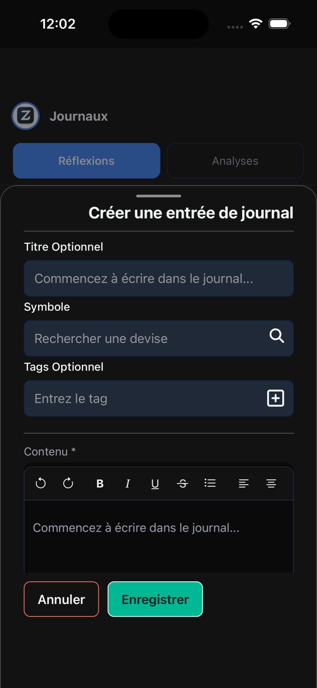
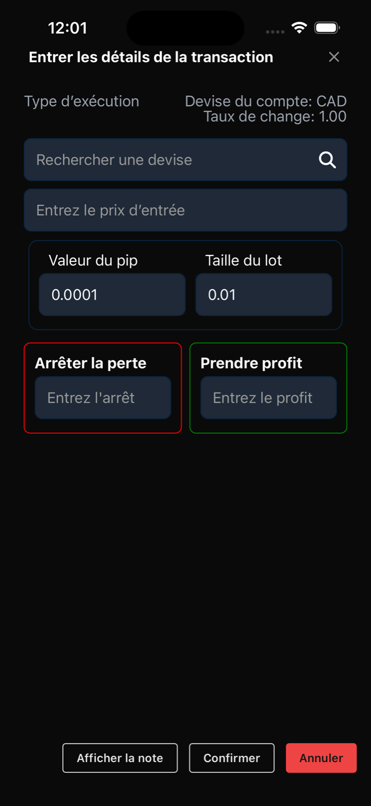
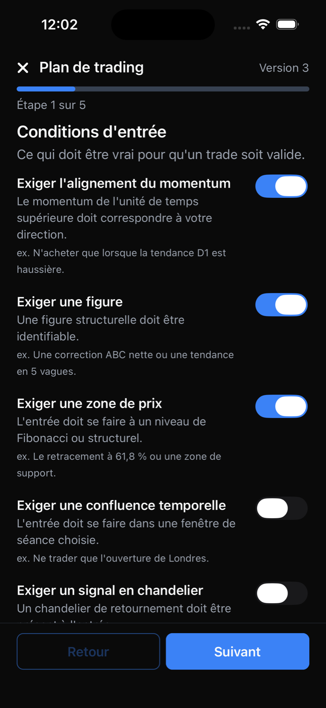
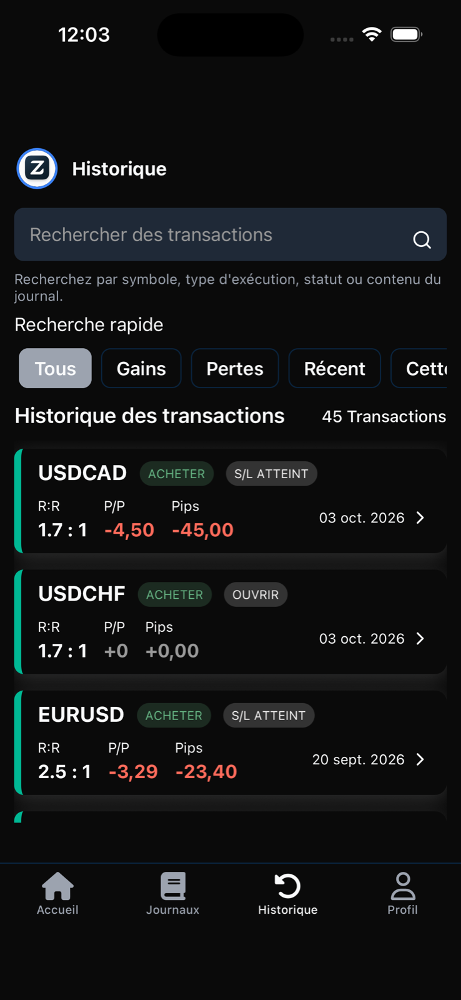
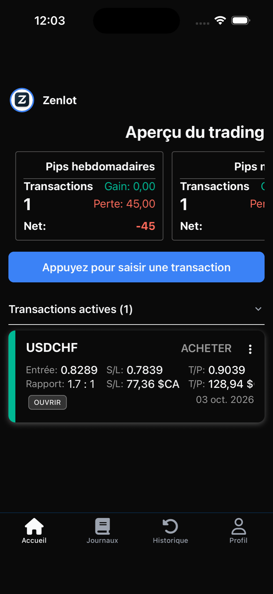
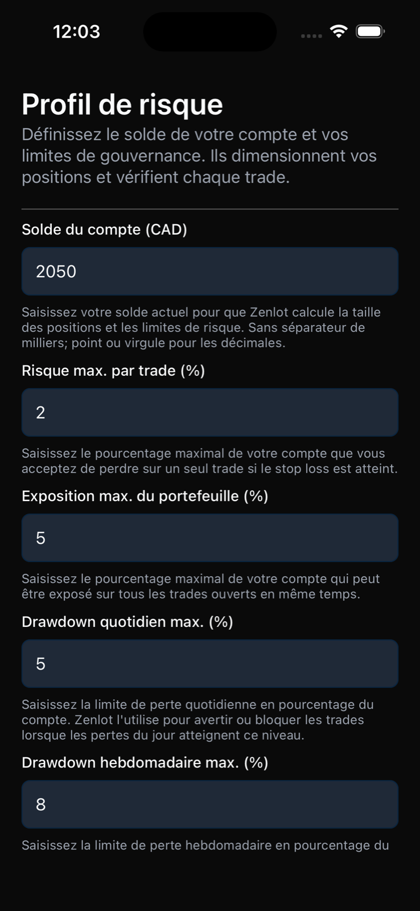
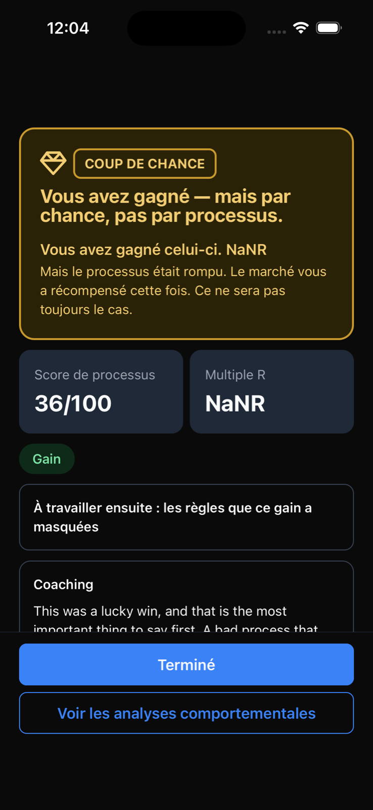
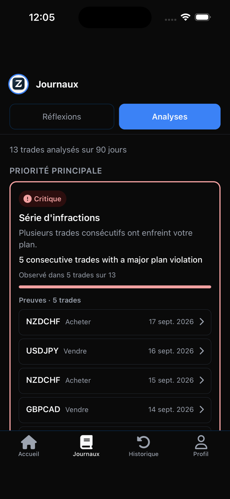

Construisez votre discipline.
Tradez selon vos règles.
Réunissez vos règles de trading, les détails de vos trades et vos réflexions dans un seul journal mobile. Zenlot vous aide à bâtir une routine autour de la planification, de l’enregistrement et de la relecture de vos trades.
Actuellement gratuit sur iOS et Android.
- Téléchargement gratuit
- Aucune connexion à un broker requise
- English, Français & Español



Données d’exemple
Pourquoi Zenlot
Donnez à vos règles de trading une place dans votre routine.
Avoir des règles est une étape. Y revenir en est une autre. Zenlot a été conçu pour aider les traders à améliorer leur discipline en gardant à portée de main les détails des trades, des réglages réutilisables et des réflexions écrites.
- Définissez les règles avec lesquelles vous voulez travailler.
- Notez le raisonnement derrière un trade.
- Prenez le temps de relire ce qui s’est passé.
Nous avons créé Zenlot pour aider les traders à construire leur discipline et à trader selon leurs règles.
Une routine que vous pouvez répéter.
Fonctionnement
Définissez vos règles. Enregistrez votre trade. Relisez et réfléchissez.
-
Étape 1Définir
Enregistrez des réglages de stop-loss et de take-profit en pips, réutilisables à chaque trade. Choisissez un profil de risque — Prudent, Équilibré ou Dynamique — et, si vous le souhaitez, construisez un plan de trading.
- Règles de trading
- Profil de risque
- Plan de trading

Données d’exemple
-
Étape 2Enregistrer
Ajoutez votre entrée, la taille du lot, le stop-loss et le take-profit. Zenlot suggère des niveaux à partir de vos règles et affiche des repères de position et de gouvernance avant confirmation. Gardez la raison du trade à côté de ses détails.
- Saisie du trade
- Checklist pré-trade
- Note de journal
Données d’exemple
-
Étape 3Relire
Revenez à votre historique et à votre journal. Appuyez-vous sur l’analyse hebdomadaire et mensuelle, le verdict de chaque trade et les Analyses comportementales pour votre relecture.
- Historique
- Analyse hebdomadaire et mensuelle
- Verdict du trade
- Analyses comportementales

Données d’exemple
Commencez par un enregistrement clair. Construisez une habitude à laquelle revenir.
La boucle est votre routine, pas une exécution automatique — Zenlot ne passe jamais d’ordres pour vous.
Une réflexion que vous pourriez écrire
Quelle était ma raison d’entrer ?Ai-je suivi les règles que je comptais appliquer ?Que dois-je retenir pour la prochaine fois ?
Contenu de journal suggéré — à écrire à votre façon.
En langage simple
- Stop-lossLe prix auquel vous acceptez que le trade n’a pas fonctionné et le fermez.
- Take-profitLe prix auquel vous encaissez votre gain et fermez le trade.
- PipLe plus petit pas de prix standard d’une paire de devises.
- Taille du lotLe volume que vous tradez. Zenlot peut en recommander un à partir de votre profil de risque.
Ce qui rend Zenlot utile
Un enregistrement dont vous pouvez vraiment apprendre.
Chaque fonctionnalité ci-dessous est dans la version actuelle sur l’App Store et Google Play.
Des règles réutilisables.
Vos réglages de stop-loss et de take-profit enregistrés vous proposent des niveaux pendant la saisie d’un trade.
Un enregistrement avec du contexte.
Gardez les chiffres et le raisonnement. Des réflexions écrites vous donnent plus à revisiter qu’un simple résultat.
Une routine de relecture sur mobile.
Revenez à votre historique, à votre journal et à l’analyse hebdomadaire ou mensuelle, où que vous utilisiez votre téléphone.
Des garde-fous avant de confirmer.
Position et gouvernance affiche le lot recommandé, l’exposition du capital et le ratio récompense-risque par rapport à votre profil de risque — et vous avertit lorsqu’un trade en sort.
Jugez le processus, pas seulement le résultat.
Chaque trade clôturé reçoit un verdict avec son R-multiple et des notes de qualité du setup et de respect du plan, pour distinguer un gain chanceux d’une perte disciplinée.
Des tendances exploitables.
Après 10 trades évalués, les Analyses comportementales mettent en évidence vos habitudes récurrentes, preuves à l’appui.
Conçu pour les traders de tous niveaux. Actuellement gratuit.
Aussi dans la version actuelle

Analyse hebdomadaire et mensuelle

Profil de risque

Verdict du trade

Analyses comportementales
Les écrans présentent des données d’exemple, pas des résultats réels d’utilisateurs.
Pour qui
Où que vous en soyez en trading, un enregistrement clair aide à relire.
Commencez par l’habitude.
Notez les détails et votre raisonnement pour chaque trade. Les termes en langage simple ci-dessus suffisent pour démarrer.
Gardez les règles dans la routine.
Gardez vos règles et vos réflexions dans chaque enregistrement, et laissez les verdicts montrer où les deux s’écartent.
Gardez le processus à portée de main.
Conservez votre historique de trading et votre processus de relecture sur votre téléphone, avec l’historique, l’analyse et les analyses comportementales.
Zenlot soutient votre routine. Il ne remplace ni la formation au trading ni votre propre jugement.
Télécharger Zenlot
Commencez votre prochaine relecture avec un enregistrement plus clair.
Définissez vos règles de trading, enregistrez un trade et écrivez pourquoi vous l’avez pris. Donnez-vous quelque chose de concret à relire.
Zenlot est actuellement gratuit.

À qui s’adresse Zenlot ?
Aux traders de tous niveaux qui veulent construire leur discipline par des règles, l’enregistrement des trades et la réflexion. L’application est centrée sur le forex.
Que puis-je enregistrer ?
Les détails d’un trade comme l’entrée, la taille du lot, le stop-loss et le take-profit, accompagnés de notes écrites. Les trades clôturés reçoivent un verdict que vous pouvez relire plus tard.
Zenlot passe-t-il des ordres chez mon broker ?
Non. Zenlot enregistre et suit vos trades ; il n’envoie aucun ordre à votre broker. Un trade suivi peut se clôturer automatiquement dans l’application lorsque son stop-loss ou son take-profit est atteint — cela met à jour votre enregistrement, ce n’est pas un ordre de bourse.
Zenlot est-il gratuit ?
Oui. Zenlot est actuellement gratuit.
Où puis-je le télécharger ?
Utilisez les boutons App Store ou Google Play de cette page.
Quelles langues sont prises en charge ?
L’anglais, le français et l’espagnol dans toute l’application — y compris les dates et le format des nombres, qui suivent les réglages de votre appareil.
Comment supprimer mon compte et mes données ?
Suivez la procédure sur notre page de suppression de compte.
Zenlot est-il un conseil financier ?
Non. Zenlot est un outil pour appliquer des règles que vous définissez vous-même et enregistrer vos propres décisions. Il ne fournit ni conseil financier, ni recommandation, ni signal de trading. Le trading comporte des risques, y compris la perte de votre capital.